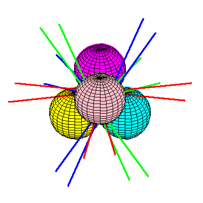
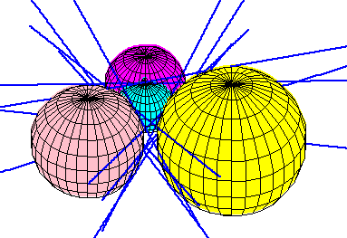
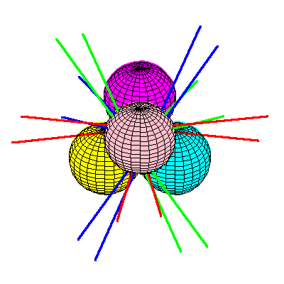
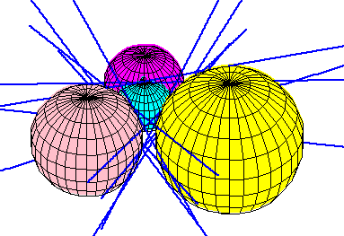

|
Macdonald, Pach, and Theobald found a beautifully symmetric
configuration of four spheres with 12 common real tangents.
 |
|
|
|
Megyesi: Spheres with coplanar centres can have 12
tangents, but only if radii not equal  |
||